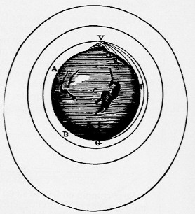

Il cannone di Newton
In cima a una montagna altissima, sopra l'atmosfera, un cannone spara in orizzontale. Più il proiettile è veloce, più cade lontano, finché non cade più: gira intorno alla Terra. È l'esperimento mentale con cui Newton collega la mela che cade alla Luna che gira.
Spara
Prima di sparare
1. Se la velocità raddoppia, il proiettile cade a distanza doppia? Prova 2 e 4 km/s.
2. A che velocità non cade più? Scrivi la tua previsione, poi cercala con il cursore.
3. Nell'orbita circolare, che angolo fa la forza con la velocità? E in un'orbita ellittica?
La fisica che c'è sotto
L'unica forza è la gravità, diretta verso il centro della Terra: |F| = G M m / r². Il programma calcola il moto passo per passo, come nelle simulazioni VPython: a ogni passo aggiorna la velocità con l'accelerazione e la posizione con la velocità.
Nell'orbita circolare la gravità è proprio la forza centripeta che serve: G M m / r² = m v² / r, quindi v = √(G M / r). Al livello del suolo sarebbe circa 7,9 km/s; dalla cima della montagna un po' meno, perché r è più grande.
Sopra la velocità di fuga √(2 G M / r) il proiettile non torna più. In mezzo ci sono le ellissi, con il centro della Terra in un fuoco.
Dati: raggio terrestre 6371 km, G M = 3,986·10¹⁴ m³/s², quindi |g| = 9,8 m/s² al suolo. Niente aria e Terra che non ruota. La montagna è altissima, come nella figura di Newton, perché il proiettile voli sopra l'atmosfera.
La figura di Newton

Newton immagina di sparare dalla montagna V sempre più forte: il proiettile cade in D, poi in E, F, G, finché fa tutto il giro e torna in V. Così, alla fine, «oltrepasserebbe i confini della Terra senza toccarla».